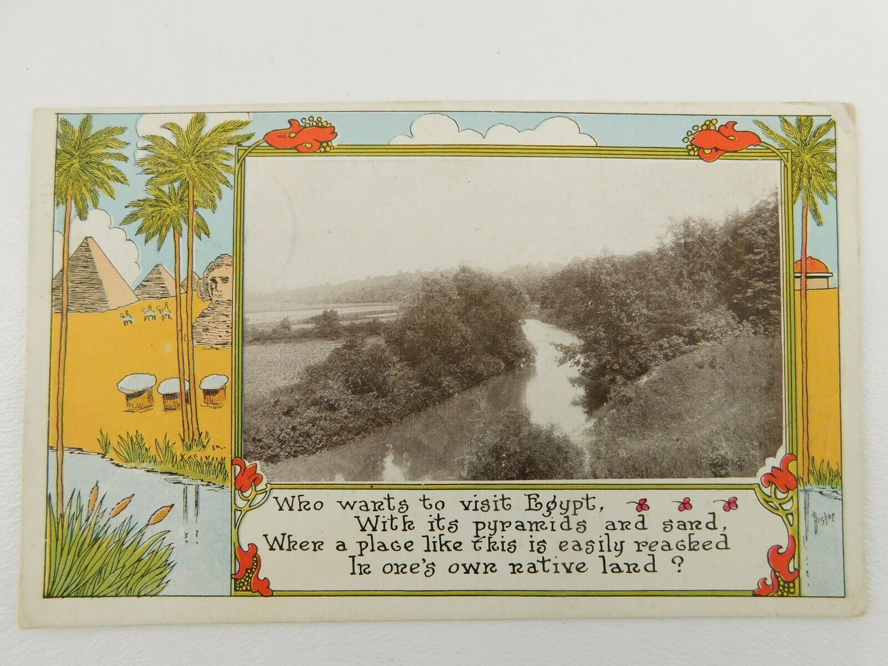
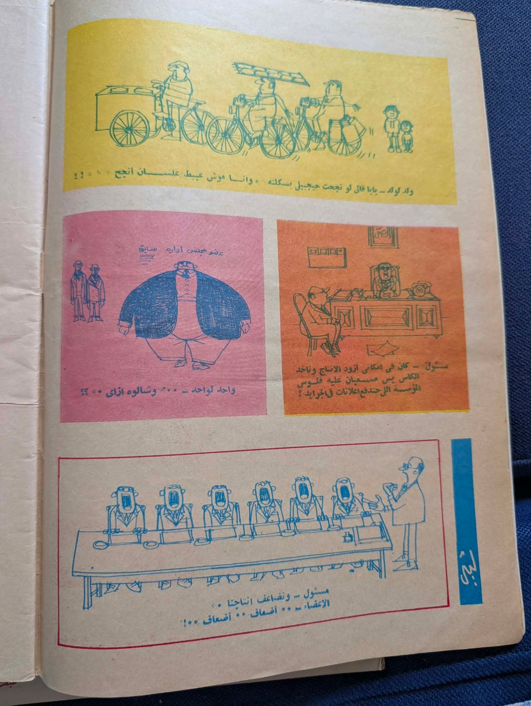

SYSTEM APPLICATIONS / TAVUS FOUNDATIONFour ways
Four ways
through the record.
These full-page specimens share one identity but change their composition with the job: introduce a mission, read a person, follow an essay, or work with data.
They use supplied source objects and contemporary, source-informed artwork. Names, dates, provenance, rights and service availability require verification before product use.
01 / COMPANY & NETWORK
Culture travels.
Mission-led opening, four-stage method, illustrated architecture study and product routes.
OPEN PAGE ↗
02 / FILM & PEOPLE
A face in the archive.
Longform person record with full source, uncertain attribution, related object and evidence trail.
OPEN PAGE ↗03 / KAYFFA & ESSAY
Read the whole page.
Article rhythm, table of contents, source comparison, marginal drawing and archive shelf.
OPEN PAGE ↗
04 / DATA & SERVICES
Make a record work.
Searchable local collection, source viewer, table/cards, export, schema and service matrix.
OPEN PAGE ↗